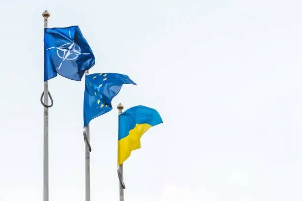
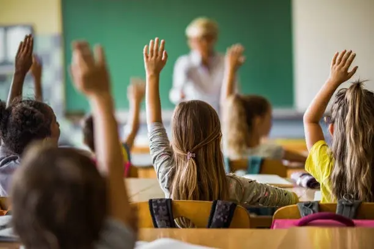
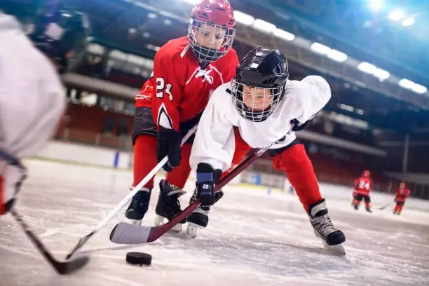

NAŠE PRIORITY

Výrazně se zapojíme do EU a NATO
- Přijmeme Euro
- Zvýšíme peníze do obrany na 3,5% HDP
- Staneme se hráčem na geopolitické scéně
- Podpora dotací pro malé firmy
Reformujeme školství
- Kvalitní pomůcky do škol
- Zastavme zbytečné memorování dat a informací
- Výuka bude interaktivní
- Víc přímých zkušeností
- Propojme sport se školou
Program ve své plné kráse
- Každý musí mít právo vzít si za manžela/ku stejné pohlaví
- Přejdeme na zelenou elektřinu
- Zlepšíme dostupnost bydlení
- Šíření dezinformací se stane trestným činem
- Přestaňme obchodovat s autoritářskými režimy
- Větší kontrola dotací
- Nový systém volby členů dozorčí rady státních firem
- Konečně dotáhneme důchodovou reformu
- Snížíme počet státních zaměstnanců
Jde nám o budoucnost
Vše začíná v našich školách, proto naše děti musí mít ty nejlepší prostředky a pomůcky k lepšímu vzdělávání, například interaktivní tabule. To ale nestačí, musí se vyučovat interaktivně, žáky škola musí bavit, nesmí se v ní stresovat ze špatných zámek a musí je někam posouvali. Výuka se zároveň v některých předmětech redukuje na přípravu k testům, které toho o skutečných schopnostech žáka často vypovídají málo. Zastavme memorování úplně zbytečných dat a informací a začněme děti učit souvislosti a praktická řešení.
Propojení školy a sportu
Dnes pouze málo žáků provozuje nějaký sport na Full-time. Přičemž tito sportovci, především hrající v týmech mají mnohem lepší morálku, jsou poctivější a zároveň budou stát v budoucnu stát mnohem méně peněz. Investujme tedy teď do našich dětí peníze a v budoucnu se nám vrátí v podobě zdravého (bude stát pojišťovny méně peněz), sebevědomého (i v pracovní kariéře) a poctivého národa. Ulehčeme rodičům dětí a propojme školu se sportem, obnovme talentové školy a financujme tyto dětské týmy a sportovce.